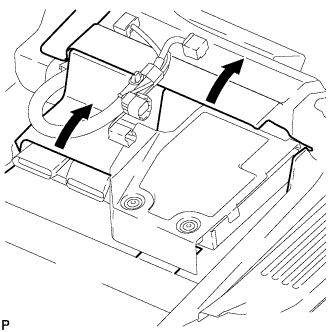
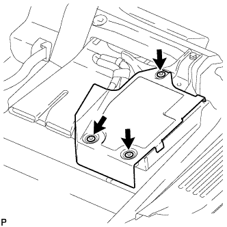
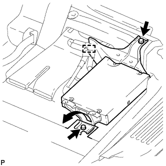
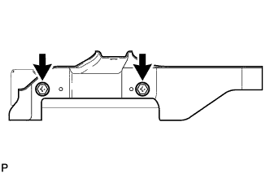
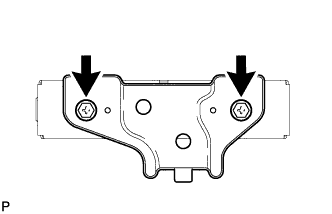

REAR SEAT ENTERTAINMENT ECU > REMOVAL |
| 1. DISCONNECT CABLE FROM NEGATIVE BATTERY TERMINAL |
| Condition | Waiting Time |
| Vehicle enrolled in G-BOOK system | 6 minutes |
| Vehicle not enrolled in G-BOOK system | 1 minute |
| 2. REMOVE FRONT SEAT ASSEMBLY RH |
Remove the front seat assembly RH (Click here).
| 3. REMOVE MULTI-MEDIA MODULE COVER |
|  |
Fold back the floor carpets in the directions of the arrows.
|  |
Detach the 3 clips and remove the multi-media cover.
| 4. REMOVE MULTI-DISPLAY CONTROLLER SUB-ASSEMBLY WITH BRACKET |
|  |
Disconnect the 4 connectors and detach the clamp.
Fold back the floor carpet in the direction of the arrow.
Remove the bolt, screw and multi-display controller sub-assembly with bracket.
| 5. REMOVE NO. 2 MULTI-DISPLAY CONTROLLER BRACKET |
|  |
Remove the 2 screws and No. 2 multi-display controller bracket.
| 6. REMOVE NO. 3 MULTI-DISPLAY CONTROLLER BRACKET |
|  |
Remove the 2 screws and No. 3 multi-display controller bracket.